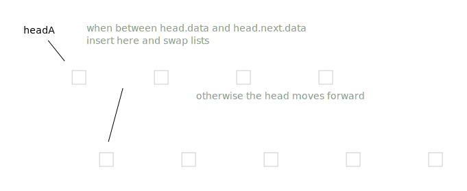
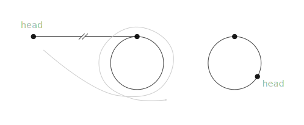
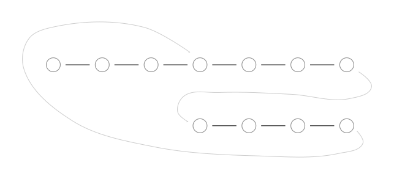
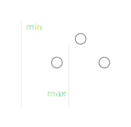

Algorithms and Data Structures
- cracking the coding interview
- Linked lists
- Trees
- Stacks
- Trie
- Ternary search tree
- Skip list
- misc
- Trash
cracking the coding interview
Linked lists
class Node(object):
def __init__(self, data=None, next_node=None):
self.data = data
self.next = next_node
def MergeSortedLists(headA, headB):
if not headA: return headB
if not headB: return headA
if headA.data < headB.data:
headA.next = MergeLists(headA.next, headB)
return headA
else:
headB.next = MergeLists(headA, headB.next)
return headB

def MergeLists(headA, headB):
if not headA: return headB
if not headB: return headA
if not (headA.data < headB.data):
headA, headB = headB, headA
result = headA
while headA.next:
if headB.data < headA.next.data:
headA.next, headB = headB, headA.next
headA = headA.next
headA.next = headB
return result

# the code assumes the node at position exists
def GetNodeFromEnd(head, position):
result = head
current = head
i = 0
while current.next:
i += 1
current = current.next
if i > position:
result = result.next
def RecursiveGetNodeFromEnd(head, position):
if not head:
return (None, 0)
(r, i) = RecursiveGetNode(head.next, position)
if i == position:
return (head.data, i+1)
else:
return (r, i+1)
def GetNodeFromEnd(head, position):
(r, _) = RecursiveGetNode(head, position)
return r
def RemoveDuplicates(head):
if not head:
return None
current = head
while current.next:
if current.data == current.next.data:
current.next = current.next.next
else:
current = current.next
return head
detecting a loop in a linked list:
http://blog.ostermiller.org/find-loop-singly-linked-list
http://k2code.blogspot.ru/2010/04/how-would-you-detect-loop-in-linked.html
def has_cycle(head):
if not head or not head.next:
return False
current = head
prev = None
while current.next:
current.next, next, prev = prev, current.next, current
return current is head
def has_cycle(head):
if not head:
return False
tortoise = hare = head
while hare.next and hare.next.next:
tortoise = tortoise.next
hare = hare.next.next
if tortoise is hare:
return True
return False

- If we put two points on a circle and let them go in one direction, and one of them is twice as fast as the other, they meet again in the starting point after the slower one makes a full turn.
- Wind the part before the loop to the cycle. Tortoise and hare now meet at the point that corresponts to the head. If we are detecting a cycle, we are done.
- If we want to find the beginning of the cycle, we put another tortoise at the initial head and let tortoises meet. One will go through the initial part, the other will go through the same part, but wound to the cycle, and they meet at the beginning of the cycle.
def has_cycle(head):
if not head:
return False
tortoise = hare = head
teleport = 2
steps = 0
while hare.next:
steps +=1
hare = hare.next
if tortoise is hare:
return True
if steps == teleport:
steps = 0
teleport *= 2
tortoise = hare
return False
https://www.hackerrank.com/challenges/find-the-merge-point-of-two-joined-linked-lists
We can align two linked lists to their ends by skipping some steps on longer list after we know their lengths.
Or we can connect end of one list to beginning of the other and vice versa.
So after traversing of the longer one, we are now syncronized.

def FindMergeNode(headA, headB):
a, b = headA, headB
while a is not b:
a = a.next if a.next else headB
b = b.next if b.next else headA
return a
https://www.hackerrank.com/challenges/insert-a-node-into-a-sorted-doubly-linked-list
def InsertNodeIntoSortedDoublyLinkedList(head, data):
if not head:
return Node(data)
h = head
while h.next and data > h.next.data:
h = h.next
new = Node(data, h.next, h)
if h.next:
h.next.prev = new
h.next = new
return head
https://www.hackerrank.com/challenges/reverse-a-doubly-linked-list
def ReverseDoublyLinkedList(head):
if not head:
return head
head.next, head.prev = head.prev, head.next
while head.prev:
head = head.prev
head.next, head.prev = head.prev, head.next
return head
deck: algorithms and data structures — linked lists
- q: Write a class for a node of a linked list. — a: copied from context
- q: Merge two sorted linked lists recursively. — a: copied from context
- q: Merge two sorted linked lists iteratively. — a: copied from context
- q: Get nth node from the end of a linked list iteratively. — a: copied from context
- q: Get nth node from the end of a linked list recursively. — a: copied from context
- q: Delete duplicates from sorted linked list.
- q: What are the ways to detect a loop in a linked list? — a: Reverse the list, tortoise and hare, and the optimized version, teleporting tortoise.
- q: Detect a loop in a linked list using reverse.
- q: Detect a loop in a linked list using tortoise and hare algorithm.
- q: Detect a loop in a linked list using teleporting tortoise algorithm.
- q: Find beginning of a loop in a linked list.
- q: Find merge point of two linked lists.
- q: Insert a node into a sorted doubly linked list.
- q: Reverse a doubly linked list.
TODO:
- q: print elements of a linked list
- q: insert a node at the head of a linked list, return new head
- q: insert a node at the end of a linked list, return the head
- q: insert a node at given position of a linked list, return the head
- q: remove a node at given position of a linked list, return the head
- q: print a linked list in reverse order
- q: compare two linked lists
TODO: python doesn’t have tail recursion. How to work with linked lists?
TODO: Pollard’s rho algorithm for integer factorization. https://en.wikipedia.org/wiki/Pollard%27s_rho_algorithm, https://www.cs.colorado.edu/~srirams/courses/csci2824-spr14/pollardsRho.html
TODO: https://wiki.haskell.org/H-99:_Ninety-Nine_Haskell_Problems, http://www.ic.unicamp.br/~meidanis/courses/mc336/2006s2/funcional/L-99_Ninety-Nine_Lisp_Problems.html, http://www.informatimago.com/develop/lisp/l99/
Trees
https://www.hackerrank.com/challenges/tree-preorder-traversal
https://www.hackerrank.com/challenges/tree-postorder-traversal
https://www.hackerrank.com/challenges/tree-inorder-traversal
TODO: there are two definitions of top view of a tree: a simple one https://www.hackerrank.com/challenges/tree-top-view, and a complex one http://www.geeksforgeeks.org/print-nodes-top-view-binary-tree/
void LevelOrder(node* root)
{
queue<node*> q;
q.push(root);
while( ! q.empty() ) {
if ( q.front() ) {
cout << q.front()->data << ' ';
node* l = q.front()->left;
node* r = q.front()->right;
q.push(l);
q.push(r);
}
q.pop();
}
}

insert data into a binary search tree
node * insert_into_bst(node * root, int value) {
if( !root ) {
node* r = new node();
r->data = value;
r->left = NULL;
r->right = NULL;
root = r;
}
else if(value < root->data) {
root->left = insert_into_bst(root->left, value);
}
else {
root->right = insert_into_bst(root->right, value);
}
return root;
}
node* insert(node* root, int value)
{
node* c = root;
if( ! root ) {
node* r = new node();
r->data = value;
r->left = NULL;
r->right = NULL;
return r;
}
while(true) {
if(value < c->data) {
if(c->left) {
c = c->left;
continue;
} else{
node* r = new node();
r->data = value;
r->left = NULL;
r->right = NULL;
c->left = r;
break;
}
} else {
if(c->right) {
c = c->right;
continue;
} else{
node* r = new node();
r->data = value;
r->left = NULL;
r->right = NULL;
c->right = r;
break;
}
}
}
return root;
}
https://leetcode.com/problems/validate-binary-search-tree/

bool check(Node* root, int min, int max) {
if( !root ) {
return true;
}
if( min < root->data && root->data < max &&
check(root->left, min, root->data) &&
check(root->right, root->data, max) )
{
return true;
}
return false;
}
bool checkBST(Node* root) {
return check(root, INT_MIN, INT_MAX);
}
node* find_lca(node* root, int v1,int v2)
{
if(v1 <= root->data && root->data <= v2) {
return root;
}
if(v2 < root->data) {
return find_lca(root->left, v1, v2);
}
if(root->data < v1) {
return find_lca(root->right, v1, v2);
}
return NULL;
}
void decode_huff(node* root, string s)
{
node* c = root;
for(std::string::size_type i = 0; i < s.size(); ++i) {
if(s[i] == '0') {
c = c->left;
} else {
c = c->right;
}
if(c->data != '\0') {
cout << c->data;
c = root;
continue;
}
}
}
- q: Print a binary tree preorder traversal — a:
- q: Print a binary tree postorder traversal — a:
- q: Print a binary tree inorder traversal — a:
- q: Get height of a binary tree
- q: Print a binary tree using breadth-first search
- q: Insert a new node into a binary search tree recursively.
- q: Insert a new node into a binary search tree iteratively.
- q: Validate binary search tree.
- q: Find lowest common ancestor of two elements in a binary search tree. — a: Do not forget to consider a case when an one element is above the another.
- q: Decode a bitstring using a given huffman tree.
Stacks
# <https://www.hackerrank.com/challenges/maximum-element>
n = int(input())
s = []
for _ in range(n):
l = list(map(int, input().split()))
if l[0] == 1:
m = s[-1][1] if s else l[1]
m = l[1] if m < l[1] else m
s.append((l[1], m))
if l[0] == 2:
s.pop()
if l[0] == 3:
print(s[-1][1])
def validate_balanced_brackets(s):
stack = []
for c in s:
if c in '{[(':
stack.append(c)
else:
try:
t = stack.pop()
except IndexError:
return False
if (t == '{' and c == '}') or (t == '[' and c == ']') or (t == '(' and c == ')'):
continue
else:
return False
if stack:
return False
return True
- q: Maximum element of a stack.
- q: Validate balanced brackets.
- q: Simplest text editor with undo.
Trie
derived from the word “retrieval” and pronounced as “try” to distinguish from “tree”
keys are words, alphabet of size \(A\)
number of words in the trie is \(N\)
functions:
- insert a key, value
- retrieve a value by key
- delete a key — lazy without clean up, eager with clean up
\(\Theta(l)\), where \(l\) is a word length, search miss \(O(\log_A{N})\) — http://algs4.cs.princeton.edu/lectures/52Tries.pdf#21
-
get number of keys in trie — lazy dts, eager with number for the whole trie, very eager with numbers for nodes
- get all words with a prefix
- wildcard match
- longest word, which is a prefix of a given one
when you have anything to do with prefixes, alphabetical ordering
also easy to implement, no hash functions, resizing, rehashing
can be slower and require more space than a hash table, depends on data
number of pointers is between RN and RNw, where w is an average word length
application:
- dictionary kv-storage
- spellchecker, t9, word games
- wildcard searching
- sorting
- ip routing (longest prefix matching)
- full text search
- data compression
- computational biology
- storing and queryng xml
http://algs4.cs.princeton.edu/52trie/
https://leetcode.com/articles/implement-trie-prefix-tree/
http://phpir.com/tries-and-wildcards/
Skiena
https://en.wikipedia.org/wiki/Trie#As_a_replacement_for_other_data_structures
https://www.toptal.com/java/the-trie-a-neglected-data-structure#performance-tests
http://algs4.cs.princeton.edu/lectures/52Tries.pdf
http://www.cs.princeton.edu/courses/archive/fall05/cos226/lectures/trie.pdf
exercises:
https://leetcode.com/problems/implement-trie-prefix-tree/
https://www.topcoder.com/community/data-science/data-science-tutorials/using-tries/
http://www.spoj.com/problems/PHONELST/
https://www.codechef.com/problems/EST
https://threads-iiith.quora.com/Tutorial-on-Trie-and-example-problems
https://www.hackerrank.com/challenges/contacts
https://www.hackerrank.com/challenges/no-prefix-set
- why is it called trie?
- trie vs hash table and other search trees
- functions on trie and their implementations
- implementation of nodes
- time-space complexity
- applications
- what about to have hash tables or other data structures instead of arrays in trie nodes?
- TODO: illustraton of trie nodes implementation: http://127.0.0.1:4001/algorithms/Algorithms.4th.by_Sedgewick_Wayne.pdf#747
- TODO: search miss \(O(\log_{A}{N})\): http://127.0.0.1:4001/algorithms/Algorithms.4th.by_Sedgewick_Wayne.pdf#756
- TODO: space requirements and estimates table: http://127.0.0.1:4001/algorithms/Algorithms.4th.by_Sedgewick_Wayne.pdf#758
- TODO: exercises table: http://127.0.0.1:4001/algorithms/Algorithms.4th.by_Sedgewick_Wayne.pdf#767
- TODO: add exersices
- TODO: add comparements with other algorithms
- TODO: succinct trie — http://stevehanov.ca/blog/index.php?id=120, Succinct Trees in Practice
- TODO: what is double-array trie? https://linux.thai.net/~thep/datrie/datrie.html
- TODO: directed acyclic word graph (aka dawg)
- TODO: radix tree
- TODO: fix wikipedia article on tries — wrong complexity or memory
Ternary search tree
when nodes have most children pointers used, trie is more space and time efficient than the TST
good for large alphabets, ascii, unicode — tries won’t handle this
TODO: can build balanced TSTs via rotations to achieve ( L + \log N ) worst-case guarantees, but probably not worth the trouble, since they work good even without this — http://algs4.cs.princeton.edu/lectures/52Tries.pdf#34
as fast as hash tables for string keys, space efficient
- when trie is more efficient than a tst?
Skip list
https://en.wikipedia.org/wiki/Skip_list
http://stackoverflow.com/questions/256511/skip-list-vs-binary-tree
https://www.cs.auckland.ac.nz/~jmor159/PLDS210/niemann/s_cm2.htm
http://blog.memsql.com/the-story-behind-memsqls-skiplist-indexes/
http://igoro.com/archive/skip-lists-are-fascinating/
http://eternallyconfuzzled.com/tuts/datastructures/jsw_tut_skip.aspx
https://www.cs.umd.edu/class/spring2008/cmsc420/L12.SkipLists.pdf
misc
how to iterate over a binary tree
b-tree
https://www.quora.com/As-we-start-planning-the-next-edition-of-Introduction-to-Algorithms-CLRS-what-should-we-add-and-what-should-we-remove
dfs with explicit stack — http://stackoverflow.com/questions/5278580/non-recursive-depth-first-search-algorithm/5278667#5278667
https://en.wikipedia.org/wiki/N-gram
invert binary tree, yes
http://algs4.cs.princeton.edu/cheatsheet/, http://introcs.cs.princeton.edu/java/lectures/
Алгоритмы и структуры данных в ядре Linux, Chromium — https://habrahabr.ru/company/wunderfund/blog/277143/
Разбор задач финального раунда RCC 2016 https://habrahabr.ru/company/mailru/blog/310376/
quotient filter, bloom filter, https://en.wikipedia.org/wiki/Quotient_filter, https://habrahabr.ru/post/242285/
Trash
-
Eric Mill, https://github.com/konklone
-
Parker Moore, https://github.com/parkr
-
Liu Fengyun, https://github.com/liufengyun
Parker Moore, https://github.com/parkr
| col 3 is | \(\Theta(l)\) | $1600 |
| col 2 is | centered | $12 |
| zebra stripes | are neat | $1 |